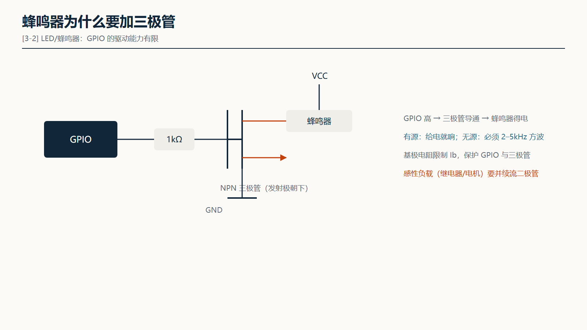

课程时长：约 39 分钟 | 深度版 | 配套结构图与看图理解
第一次把“时间”引入程序，也是第一次做多文件模块化。看起来只是让灯闪，实际在练三件事：延时怎么写才准、模块怎么拆、负载怎么驱动。
这一节的代码会贯穿整门课：后面的按键扫描、OLED 刷新、传感器采集，都要用到这里的 Delay 与模块划分方式。
写出毫秒级延时并解释误差来源
用移位和数组两种方式做流水灯
区分有源与无源蜂鸣器
用三极管驱动并算出基极电阻

图 3 NPN 三极管驱动蜂鸣器：GPIO 经 1kΩ 基极电阻控制导通
电流路径：GPIO 输出高 → 1kΩ 基极电阻 → NPN 基极 → 发射极到地，基极电流使三极管饱和导通；集电极与发射极之间近似短路，蜂鸣器一端接 VCC、另一端经三极管到地，于是得电发声。
图里三极管工作在开关状态（饱和或截止），不是放大状态——这是“数字驱动”与“模拟放大”的分界。判断有没有真正导通，量一下 Vce：饱和时约 0.2V，若接近 3.3V 说明基极电流不够或接错。
最朴素的延时是空循环，靠 CPU 一条条执行指令消耗时间。它的问题是不确定：主频、优化等级、甚至编译器版本一变，循环次数对应的时长就变了。
更可靠的是 SysTick——内核里的 24 位递减计数器，配置后可以得到与主频严格相关的延时，不占用任何外设。
void Delay_ms(uint32_t ms)
{
while (ms--)
{
SysTick->LOAD = 72000 - 1; /* 72MHz 下 72000 个数 = 1ms */
SysTick->VAL = 0;
SysTick->CTRL = 0x00000005; /* 使能 + 内核时钟 */
while (!(SysTick->CTRL & 0x00010000));
SysTick->CTRL = 0x00000004; /* 关闭 */
}
}
移位法用一个变量保存“当前亮哪一位”，每周期左移；数组法把每个状态的电平预先写进数组，循环取用。前者代码短，后者花样多。
/* 移位法：低电平点亮，取反后写入 */
uint16_t led = 0x0001;
while (1)
{
GPIO_Write(GPIOA, ~led);
led <<= 1;
if (led == 0) led = 0x0001;
Delay_ms(200);
}
| 方式 | 优点 | 缺点 |
|---|---|---|
| 移位法 | 代码短，顺序固定 | 花样受限，边界要处理 |
| 数组法 | 任意图案，改数据即可 | 占一点 Flash，需查表 |
判断方法：给一个持续高电平，响的是有源，不响的是无源。买错型号，代码怎么写都不对——这是硬件选型问题，不是软件问题。
| 类型 | 内部结构 | 驱动方式 | 声音 |
|---|---|---|---|
| 有源 | 内置振荡电路 | 给高电平就响 | 音调固定 |
| 无源 | 只有发声元件 | 必须给 2–5kHz 方波 | 频率可调，能奏旋律 |
蜂鸣器电流常见 20–30mA，超过 GPIO 单脚能力，且感性负载断电时有反峰。用 NPN 做开关：基极串 1kΩ，集电极接蜂鸣器与电源，发射极接地。
基极电流按 Ib=(3.3−0.7)/1k≈2.6mA 估算，集电极电流按 10 倍关系取 26mA，正好覆盖蜂鸣器。要保证饱和，Ib 不能太小。
| 参数 | 取值 | 说明 |
|---|---|---|
| 基极电阻 | 1kΩ | 限制 Ib，保护 GPIO 与三极管 |
| 饱和压降 Vce | 约 0.2V | 越接近 0 越说明导通充分 |
| 续流二极管 | 感性负载必加 | 泄放断电瞬间的反峰 |
LED.c / LED.h：LED_Init、LED1_ON/OFF、流水灯函数
Buzzer.c / Buzzer.h：Buzzer_Init、Buzzer_ON/OFF
Delay.c / Delay.h：Delay_ms、Delay_us，全工程共用
main.c 只调用模块函数，不出现任何寄存器操作
为什么 SysTick 是 24 位：它要兼顾所有 Cortex-M 芯片的主频范围，24 位在 72MHz 下最长约 233ms，足够做毫秒级延时；更长的时间用循环累加。
三极管饱和的判据是 β×Ib > Ic。β 取 100、Ic 取 25mA，则 Ib 至少 0.25mA；1kΩ 基极电阻在 3.3V 下能提供约 2.6mA，余量充足。
例：蜂鸣器 25mA，β=100，Ib≥0.25mA。R=(3.3−0.7)/0.25mA≈10.4kΩ 是上限；实际取 1kΩ，Ib≈2.6mA，深度饱和，Vce≈0.2V，管耗 5mW。
若取 100kΩ：Ib 只有 26µA，β×Ib=2.6mA < 25mA，管子停在放大区，Vce 升高、发热。
| 错误写法 | 后果 | 正确做法 |
|---|---|---|
| 空循环延时 | 优化后被删，延时为 0 | 用 SysTick 或加 volatile |
| 无源蜂鸣器给直流 | 不响 | 用 PWM 给 2–5kHz 方波 |
| GPIO 直驱蜂鸣器 | 电流超标、反峰击穿 | 加三极管 + 续流二极管 |
| 基极电阻取 100k | 管子不饱和、发热 | 取 1k 左右 |
空循环延时为什么不准：循环体被编译成若干条指令，耗时取决于主频、流水线、优化等级。开启 -O2 后编译器可能把空循环整个删掉，延时直接变成 0。这就是要用 SysTick 的原因——它数的是硬件时钟，不受编译器影响。
三极管为什么要工作在饱和区：放大区里 Vce 随 Ib 变化，管子上会消耗较大功率并发热；饱和区 Vce 只有 0.2V 左右，功耗几乎全落在负载上。所以数字开关用法必须保证 Ib 足够大。
示波器测 GPIO 翻转周期，验证延时是否为目标值
万用表测 Vce，确认三极管饱和（0.2V 左右）
电流表串入蜂鸣器回路，确认电流在器件额定范围内
| 现象 | 原因 | 解决 |
|---|---|---|
| 延时明显偏短 | 空循环被优化掉 | 改用 SysTick 或加 volatile |
| 蜂鸣器不响 | 无源蜂鸣器给了直流 | 改用 PWM 方波 |
| 声音很小 | GPIO 直驱电流不足 | 加三极管 |
| 三极管发热 | Ib 不足，停在放大区 | 减小基极电阻 |
Q1. 为什么软件延时不可靠？
A：依赖指令周期与优化等级，环境一变时长就变。
Q2. SysTick 属于内核还是外设？
A：Cortex-M 内核，移植性好。
Q3. 有源蜂鸣器能调音吗？
A：不能，内部振荡频率固定。
Q4. 基极电阻怎么算？
A：R=(Vio−0.7)/Ib，Ib 取 Ic 的 1/10。
Q5. 为什么流水灯要取反？
A：LED 低电平点亮，取反后只有一位为低。
Q6. 模块化拆分的好处？
A：可读、可复用、可单独测试，改实现不动调用方。
Q7. SysTick 最长能延多久？
A：24 位 @72MHz 约 233ms，更长要循环。
Q8. 为什么流水灯要取反写端口？
A：LED 低电平点亮，取反后只有一位为低。
1. 1ms 延时需要多少个 SysTick 计数？
答：72000 个（72MHz）。
2. 流水灯移位到最高位后怎么办？
答：判断是否越界，复位到最低位。
3. 有源蜂鸣器给什么信号？
答：持续高电平即可。
4. 三极管饱和时 Vce 约多少？
答：0.2V 左右。
☐ 延时能精确到 1ms
☐ 两种流水灯都会写
☐ 分清有源无源
☐ 会算基极电阻